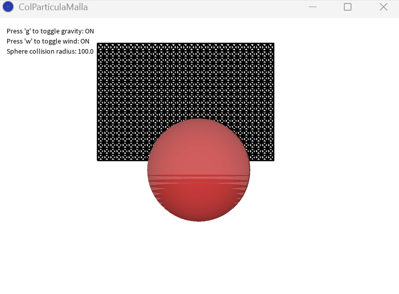

Bola - Punto
Giro simple de una bola alrededor de un punto.
Simulación — 3º GIM | Javier García Laguna
A continuación muestro un portfolio de las diferentes simulaciones que hemos ido haciendo en el entorno de Processing a lo largo del curso, ya sea en las clases de teoría o en los propios laboratorios de la asignatura. Estas se encuentran divididas en los siguientes temas:
Giro simple de una bola alrededor de un punto.
Montaña rusa simple
Muelle sometido a los diferentes integradores para comparar diferencias.
Partículas que dependiendo de la zona de la pantalla en la que esten son sometidas a efectos.
Fuente en 2D que emite partículas que simulan agua con dispersión aleatoria.

Billar francés con colisiones entre las bolas.

Entorno con muchas particulas donde aplicamos los métodos de Hash y Grid para ver las diferencias.

Banderas con diferentes estructuras a las cuales se les aplican varias fuerzas.

Malla que cae sobre una partícula y se simula su colisión.
Cubo formado por muelles y como este se deforma al aplicarle fuerzas.
Ondas simuladas en una superficie que imita al agua, las cuales se pueden sumar entre ellas.

Carrera simple entre canicas.